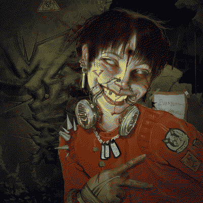
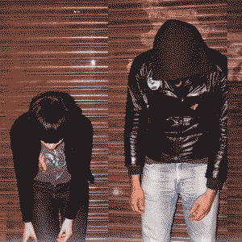
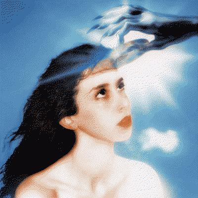
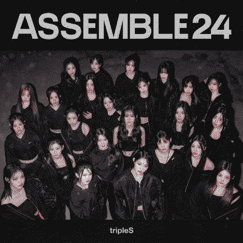

MG ultra - machine girl
type: album
genres: digital hardcore, drum n bass
date released: 18 october 2024
holy moly!!!! i saw that machine girl released a new album and decided to tune in. admittedly i mostly listened to this album while i was cooking and cleaning around the kitchen but it really surprised me how much i vibed with it?!?!? like i usually don't listen to things this Intense but i was so into it the entire time! i mostly just found it very fun to listen to and some of the lyrics are a bit catchy too.
i probably need to dig deeper into machine girl's discography at some point. i had listened to WLFGRL prior to this but it didn't quite exactly hit the mark for me back then. which was a bit disappointing after hearing so much praise for that album. but i do LOVE what they did with the neon white soundtrack. and a lot! i've never played the game but i do listen to the OST frequently because of the great (and chill) drum n bass songs machine girl cooked up for that.
anyway, bottom line is that i didn't expect anything after having the impression that machine girl's (main) releases weren't exactly for me. but what i got a very fun listening experience from this album. yay!
highlights: grindhouse, until i die, schizodipshit
rating: 

listened on 21.oct.24, published 21.oct.24
crystal castles - crystal castles
type: album
genres: synthpop, electropop
date released: 18 march 2008
i've had this album on my backlog after listening to crimewave while driving through san francisco in watch dogs 2 SO many times. this took me a while to listen to because (while i don't really know much about the whole situation) i do know about the abuse towards former band member, alice glass. so like, knowing this made me not want to listen to this for the longest time.
at the end i decided to listen to it because i had already listened to a few songs of theirs here and there. and my god are some of the songs in this are just so damn catchy. but i feel like i can't really listen to this and go "yeah this rules" without feeling my stomach turn after reading alice's statement. but i did really enjoy this type of sound, since it's something i haven't really heard of quite that much. i hope to find more stuff like this in the future. from other artists... i might check out alice glass' music some time soon.
highlights: magic spells, knights, tell me what to swallow, 1991
rating: 

listened on 21.oct.24, published 21.oct.24
imaginal disk - magdalena bay
type: album
genres: dancepop, indietronica
date released: 23 august 2024
i've had this album on my to-listen-later list based off the sick cover alone. my girlfriend one night told me that she listened to it and that she loved it so it made me want to listen to it the very next day!
and OHHHH MY GODDD. from start to finish, this was such a wonderful listening experience. i fell like i haven't heard something like this in a while. i love how each song just builds upon the other one and how nice they transition to the next one.
this just felt so so so magical to me. god i loved this a lot. i wish i was intelligent enough to write more about how this album feels to me. but i feel like i lack the vocabulary to even begin describing in.
every song is so lovely though i obviously have my favorites. though i think the one that gave the most goosebumps was the outro of the ballad of matt & mica. what a great fucking ending to such a grand album.
i also got told that i should check out their first album so i will eventually take a listen to that! but i'm seriously overjoyed with this album. i hope to get the CD someday.
highlights: death & romance, 'fear, sex', vampire in the corner, tunnel vision, the ballad of matt & mica, image
rating:
listened on 09.oct.24, published 19.oct.24
<assemble24> - tripleS
type: album
genres: kpop, dancepop, electropop
date released: 8 may 2024
boy have i been letting this marinate for a bit. from the first time i listened to it i really really enjoyed and i knew i was probably gonna listen to it more with time. guys i hate to say it. but at least for me..... the modhaus groups have been putting some banger music that is Just My Type... i of course have my gripes with... their business model (with the objects or whatever they call them man i don't care) but man. this is honestly all i want from K-pop. some nice music. just give 10 more of these and i'll be happy. maybe mix it up a bit but i will still be relatively happy.
this is just some very enjoyable electropop songs. i don't think this is a perfect album. probably far from it. i think, at least for me, a downside of tripleS is that all of their voices blend very well. like throughout these songs i don't feel like a group is singing them. this just 1 or 2 people singing in my brain  and like that is not That Bad. it's kinda whatever. but it is a criticism i have about the group.
and like that is not That Bad. it's kinda whatever. but it is a criticism i have about the group.
opening the album we have a great opener with S. the guitar in this track is just sick. this is probably their best intro. it is just so nice and groovy. with some hints here and there leading up to the title: girls never die. perfect.
i think girls never die as a title track does the job well enough. la la la la la. have i ever mentioned how i much i love their la la la's? i think it took me 3 tripleS EPs to figure out they were doing it on purpose. like with an actual purpose. they didn't just love singing la la la la every once in a while. i found it quite funny at first but i've gotten used to it.
the b-sides of this album are pretty alright! honestly i do think they are all pretty nice, but the one that stuck from the very first listen was 24 NOW THAT... that is one hell of a song. a lot of people call it rising 2.0. and not only does it make sense. but the demo for 24 is literally called recover it now and you know what? yeah. this might be rising's sister. but i don't care. i truly do think this is the best damn song on this album. one day i decided to look up the instrumental for the song and my jaw DROPPED when i heard the fucking la la la's used in the instrumentation. that is so catchy and clever. UGH. i need these kpop companies to release instrumentals because I LOVEEEE listening to them so much and finding out stuff like this.
sorry to the other b-sides... they are all very enjoyable on their own. but 24 definitely was a love at first listen type of song.
anyways, that's all i gotta say about this. some very solid stuff in here!
links: youtube
highlights: 24, girls never die, beyond the beyond, white soul snickers, dimension
rating: 
listened on 10.may.24, published 05.oct.24
bought a ticket to see billlie YAYYYYYYY! literally just found out today they were coming to Puerto Rico... i'm very excited!
published 02.oct.24